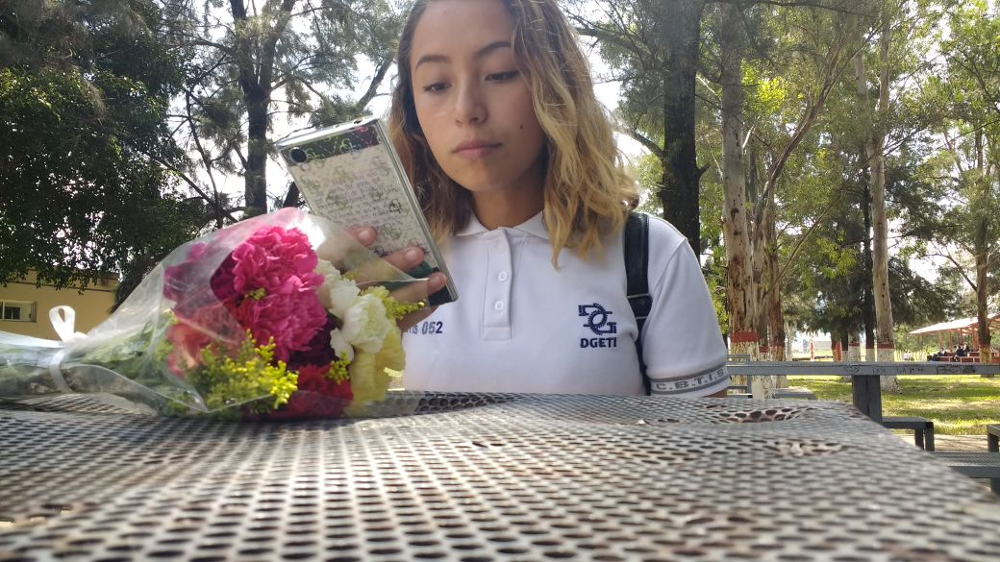
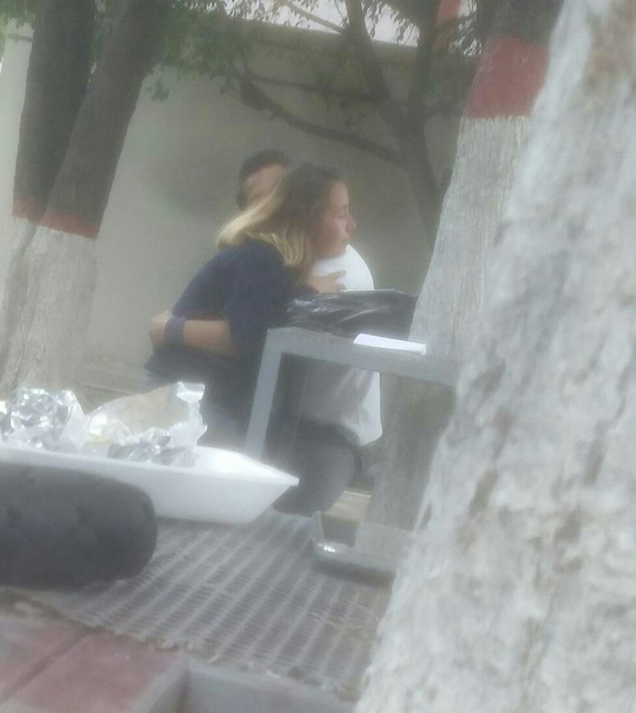
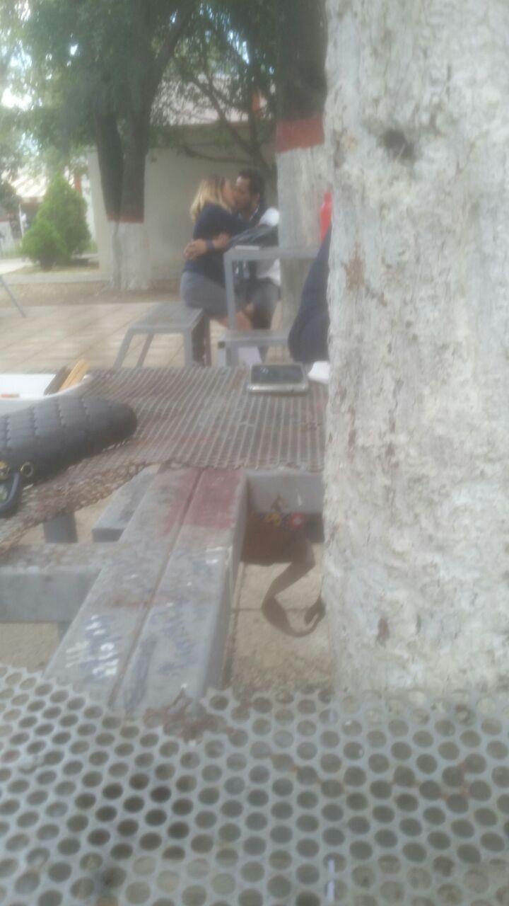
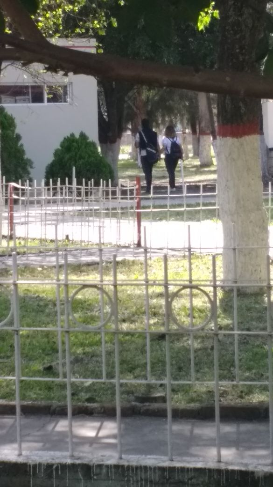
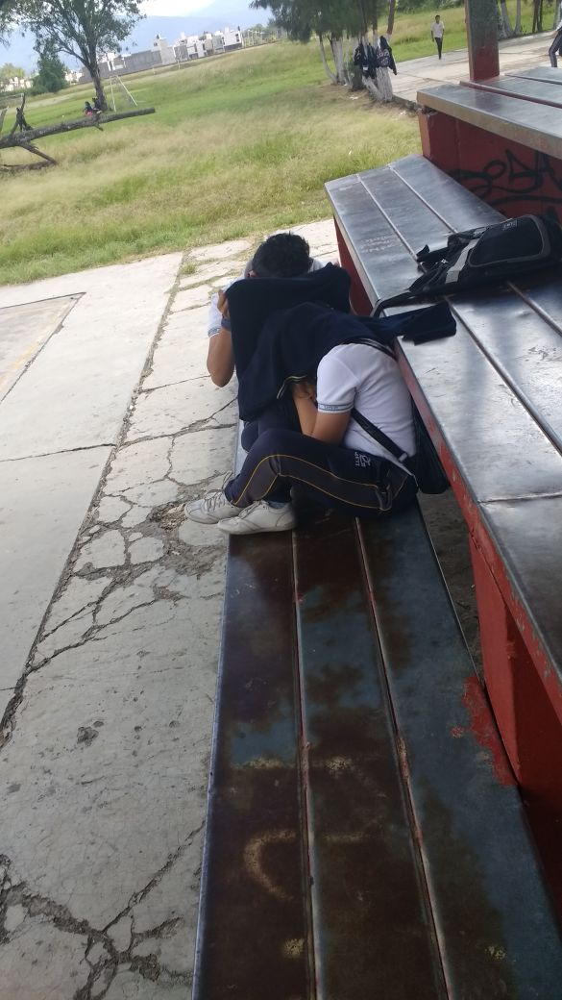

| Todo comenzo cuando un dia Yo ne dirigia hacia la cafeteria, hiva con alejandro, tu estabas con Lia, en eso Alejandro empeso empezo a hablar con Lia y Yo aproveche el bug para hablarte, en eso vi que eras bastante timita a si que pense en llevarte en otro lugar para estar solos y hablar (Mis entenciones ya eran ligarte desde hace mucho pero te freseabas v':) En eso hablamos, no se cual fue tu criterio para eso entonces, pero creo que no fue malo por que ya habias pedido mi numero para la noche, enrealdiad que me mandaras mensaje me puso de muy buen humor, saber que la chica que desde antes me gustaba por fin me estubiera haciendo caso, al dia siguiente tambien te robe en persona y paso lo de Ana y Lia xD suerte que te explique en ese momento lo que paso por que si no no me hubieras echo caso v':, al dia siguiente la chica timida (Tu) Me beso en las escaleras estaba tan sonprendido y no me lo creia, lo unico que podia pensar era "¿-Encerio esta pasando esto? no lo podia creer como era posible que me estuvieras besando, en eso momento estaba al x1000 no sabia que ser me quede sin palabras y aun mas cuando me dijiste -Tienes unos labiositos" woo era tan extraño ese momento seguia sin creer. Luego nos empesamos haber de todos los dias hasta que las cosas sepusieron dificiles y fue por que como ya te he explicado queria desaserme de todo para empezar bien antes de decirte que fueras mi novia, no queria problemas pero en fin ya sabes esa historia no es algo que me guste recordar mucho y aun apesar de todo lo que llevamos, sigo insistiendo perdon amor v':. Y aun tengo muchas cosas que decirte amor pero no quiero que te de flojera leer tanto v': por que la verdad sinto que no hacabare de decirtelo todo y como la pagina es algo larga quiero poner poquito de todo si de porsi creo que ya es bastante larga solo esta hoja y lo que le falta v': perdon amor por hacerte leer tanto y se que ta deveria dejar de escribir pero disfruto haciendo esto xD Deecho ya lo estoy haciendo aproposoto bueno paro ya... Te amo Mi rayo Mcqueen |
     |
Este video representa como fue que te ligue, esta muy gracioso :3 pero me encanto como quedo y tambien como es que te dibuje uwu xD esta bien cul.
Abajo esta el conjunto de las fotos que nos tomaron cuando nos acosaban, me encantan las dos de arriba por que esas si fueron a coso real Te juro que jamas podre olvidar nuestra historia, he pasado los momentos mas geniales contigo, todo ha sido tan jodidamente perfecto, sierto que tenemos nuestras bajas, pero enrealidad es en ese momento donde nos definimos por que en las buenas cualquier persona esta pero en las malas nadie se queda, y algo que me encanta de nosotros es que la malloria de las relaciones Terminan y regresan pero nosotros nada de eso, siempre hemos sabido llevar los problemas de una gran manera. En fin creo que podria pasarme toda la noche programando esto y recordando Todos nuestros grandes momentos e incluso los mas simple pero lo unico que quiero lograr con esto es hacerte sentir unica, demostrarte un poquito mas de lo que pienso y siento por ti, me encantaria que fueras la persona con la cual pase todo el resto de mi vida asi que ¿Aceptas? o tienes miedo amor 7u7 que dices beibi. Incluso puedo decirte que recuerdo cosas como... |